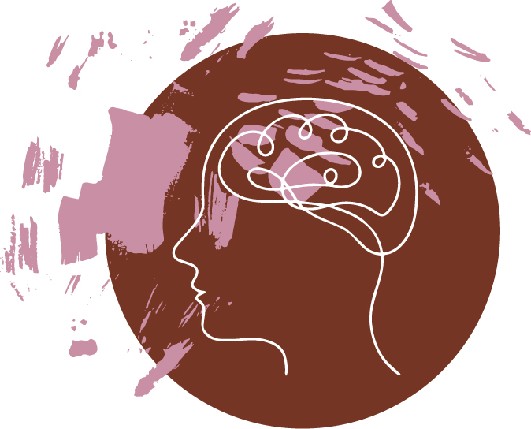

It was thought until fairly recently that our brains stopped growing around the age of 25. Science now tells us we are capable of learning new things throughout our entire lifetime. This is the science of Neuroplasticity, understanding that our brains are malleable, capable of change, growth, and learning and that nothing is fixed within our brain patterns. Our brains can adapt to new ways of thinking and learning. Over time we re-enforce new neuro pathways, forming new patterns and habits within the brain which creates greater connections. An example of this is learning a new language or instrument. Through repetition and dedication, we can learn new things slowly but surely. No matter what age or ability, nothing can hold you back.
Encouraging and strengthening Neuroplasticity can be done through repetition and practice, over and over. Similar to learning the piano. Going through your scales, up and down, up and down, many times over. Another method to strengthen Neuroplasticity is using existing knowledge and applying the new skills to it. This process helps re-inforce deeper learning by putting new skills into a different context. Just understanding the science behind Neuroplasticity itself can be beneficial. Studies show students who understand their brains can change progress immensely. If we repeat new learning, in action and thinking we build new neuro pathways. These get stronger over time, forming deeper grooves in our brains. I like to think of our brains as powerful computers, they need the right input if we want to learn and grow. As more information goes in it travels more through those wires, the wires get bigger the more we apply ourselves, and more connections form with other parts of the computer.
 Mel Robbins studies Neuroplasticity and behaviour flexibility. She explains we can break old habits and form new ones. Our brains are capable of change.
This is wonderful knowledge when we are learning or trying to kick a habit.
Mel Robins uses the 5-second rule, also known as the 5-4-3-2-1 countdown method to help interrupt the usual brain's wiring, which is following old patterns and ways of thinking.
Counting down creates immediate change in our brain, we start using our pre-frontal cortex. The countdown pushes
our brain into action and off autopilot, followed by the prompt "what is my next best action?". This re-inforces our ability
to take control of our brains and lives the more it is practiced. The more we do this the stronger the pathways get, which creates
lasting behaviour and thinking change. I use the countdown method when I am faced with challenges,
things that trigger me, or old habits that aren't serving my learning. The 5-second rule also helps practice a Growth Mindset
You can find out more about Mel Robbins and the science that backs the 5 second rule here
Growth mindset is a learning theory developed by Stanford University professor Carol Dweck. Dweck researched success and failure, and came to the understanding that how we face learning comes from one of two “mindsets”: fixed or growth. Using a growth mindset we can grow our intelligence and skills. Bringsing a can-do attitude, problem-solving, and willingness to learn from mistakes. Mistakes aren’t failure but an opportunity to learn. They are reminders of things to work on. Fixed however is not open to possibilities or change, not flexible to new ways of thinking or tackling a challenge.
Our brains are wired to protect us from things that are brave, scary or new. It’s a form of protection. While this can be great if there is an actual threat this doesn’t work very well if you’re picking up a new skill. A Growth Mindset challenges our brain's natural tendency to resist the new.
Having a growth mindset changes how you think about yourself and others. I’m working on
applying a growth mindset to my spoken words and thoughts. Instead of I can’t do it I apply “I am trying my
best”, “I can try this approach”, “I’m still learning and that is ok.”
Thoughts of I’m not good enough are flipped to, “I’m building on my knowledge of yesterday”, “I’m
showing up today to learn”. When something goes wrong that is pointing me to an area I need to focus on.
Having a growth mindset will change your life and the lives of the people around us. It challenges how we were
raised and educated usually with the understanding that we were born with inherent abilities. For example, I was
always told I was a good artist from a young age and while I loved it this also made me avoid subjects
that I wasn't naturally talented at from the outset. Having a Growth Mindset helps push past the
uncomfortableness of being a beginner, committing to learning and applying ourselves to growth and change.
I will be using a Growth Mindset to my learning plan and strategy. Even understanding the concept will help my learning. Bringing self compassion to the slow change and growth required in learning something new, being more flexible to others, listening to feedback with a different filter, admitting when I don't know something, also having less of a fear of what people will think of me if I don't understand something. I will be writing small notes to remind myself of the Growth Mindset. Daily reminders that learning takes time and that my brain can do it with the right tools. Challenging the “I'm not a coder” mentality can be difficult when you’re completely stuck. But using problem-solving to tackle a task will be key. Practicing over and over will also help my brain to make more connections. I think the reflection aspect will be important as well. Looking back on what I have achieved in a very small amount of time. Celebrating small wins is important, acknowledging how far you've come already. This builds self trust and resilience to keep going. Also understanding everyone is learning at their own speed. We all come into this with different abilities and that it isn’t a competition. Comparison is the death of a Growth Mindset. Celebrate others' successes and persistence instead.
Having a Growth Mindset takes time. It’s a practice we build upon and test out according to our abilities and
challenges. Through small actions and progressive changes in thinking we can grow our Growth Mindset. We are
often somewhere in between Fixed or Growth. Recognising and having an awareness of which one we are leaning towards
can be helpful. If I commit to showing up regularly, committed to learning and changing and having awareness of
thoughts and actions. "Is this Growth or Fixed?" can be a simple question to apply.
A Growth Mindset requires careful nurturing over time. It’s about taking small, targeted steps building on the trust
and understanding we can change our brains and use it as a tool for learning.
Image from lifteducation.com
.jpg)